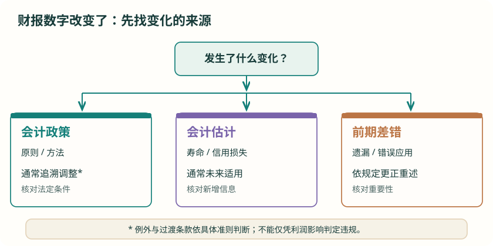

会计政策、会计估计与盈余管理
折旧年限变化可以提高账面利润，却不会自动增加现金。如何判断它是合理估计更新、会计政策变更还是前期差错？
利润多了，真的多赚了钱吗？
设一台设备原值 1,000 万元、残值为零，采用直线折旧。如果初始预计使用 10 年，完整年度折旧为 100 万；如果初始预计使用 20 年，则为 50 万。其他条件不变时，第二种估计使年度税前利润比第一种高 50 万，首年账面净值也高 50 万。但无论采用哪种估计，折旧本身不是现金支出，不会凭空增加 50 万元经营收款。
这不意味着使用寿命可以任意选。设备技术进步、生产班次、维修改造、产能淘汰计划，都可能为重新估计提供证据，也可能与管理层想展示的业绩发生冲突。分析时首先要问“估计为什么变化”，再计算“变化对利润影响多少”。
先识别性质，再确定会计处理
《企业会计准则第28号》区分三类问题：会计政策是确认、计量和报告的原则、基础和方法；会计估计是在不确定条件下对资产寿命、信用损失等作出的判断；前期差错可能源于计算、准则错误使用或事实遗漏。三者的处理方式不同，不能全部叫“政策变更”。

| 事实 | 需要辨别 | 关键证据 |
|---|---|---|
| 调整机器剩余使用寿命 | 通常是估计变更 | 设备状态、维护与改造计划 |
| 依新准则改变列报方法 | 政策/过渡规则 | 准则适用日、调节表 |
| 把未履约订单计入以前年度收入 | 可能是前期差错 | 合同、交付和重要性 |
| 新签合同履约模式与过去不同 | 可能是新交易而非政策变更 | 合同权利义务变化 |
为什么盈余管理不等于“一定合法”？
盈余管理是研究管理层如何通过经营活动或会计判断影响报告结果的一个分析概念，并非会计法规中一张单独的合法证书。有充分证据、符合准则的估计更新可以是必要行为；刻意虚构业务、隐匿减值、错误确认收入则可能违反准则或法律。两者也不能仅凭利润上升与否判断。
所谓“洗大澡”（big bath）是某些年份集中确认损失的现象。若资产确实减值，则及时确认是应有之义；若故意跨期夸大损失，则可能出现误报。不能根据“巨亏后次年反弹”就断言企业操纵，更不能由此推导投资机会。
企业因设备过时合理缩短折旧年限，当期利润可能下降，但信息质量反而提高。因绩效目标无依据地延长寿命则需要调查，不应把利润效果当作合规性证据。
预期信用损失：计提不是固定比例选择题
按《企业会计准则第22号》，信用损失分析涉及未来现金短缺、概率加权、货币时间价值与合理前瞻信息。假设一笔应收余额 1,000 万，使用简化教学损失比率 2% 得到 20 万准备，若根据新证据变为 5%，则得到 50 万准备；若本期确需补提 30 万且其他因素不变，税前利润下降 30 万。
2% 与 5% 都不是准则统一规定的比例，不能为了达到利润目标任意切换。需要检查客户账龄、违约记录、后续回款、客户行业与宏观情景。会计估计变更对以后期间的影响，应根据实际准则和期后证据记录。
剩余折旧年限敏感性工作台
以下案例从变更日开始：账面净值 800 万、预计残值零，旧预计剩余 8 年，新估计剩余 16 年。旧方案未来年折旧 100，新方案 50。比较的是未来年度，不是将过去折旧追溯调整。
调整假设，即时复算
以下仅为教学虚构数据；可直接按正文公式手工验算。
当寿命延长使利润更好看，最重要的不是计算结果，而是问“维修记录、更新替换计划和估计更新的证据是什么”。
形成可复核的判断
建议同时保存本期与前两期会计政策附注、估计变更影响额、审计意见、固定资产和应收明细，列出每个重大估计改变的日期、依据与未来影响。对于收入确认方式突然变更，财政部关于 2025 年年报的通知特别强调：若业务模式和合同条款未变，改变收入确认方式通常可能意味着存在会计差错，而不是当然的政策变更。
自测：折旧年限延长就必然是财务造假吗？
不能如此判断。先核对使用寿命变化的实际证据、准则分类、变更日起的未来适用及披露。无证据故意误报与有充分新信息的正常估计修订，性质不同。
结论：会计解释应先有事实和规则，再有利润敏感性计算，最后才是风险判断。
依据与边界
页面计算及案例数字均为教学虚构；实际会计判断需核对公司报告期间适用准则与独立原始证据。